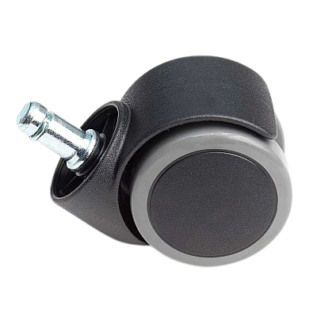

Sobre a Sedere Cadeiras

Aqui prevalecemos a qualidade de nossos produtos.
Nós somos especialistas em nosso ofício. Com um atendimento incomparável, temos o compromisso de fornecer produtos de qualidade e serviços excepcionais para que nossos clientes sempre voltem a nos procurar. Estamos constantemente nos aprimorando para expandir nossas ofertas a fim de melhor atender toda a região de Londrina.
Nosso estabelecimento
Localização do nosso estabelecimento
Benefícios
- Profissionais Qualificados
- Localização
- Qualidade
- Velocidade de Serviço
- Pontualidade
História
SEDERE CADEIRAS, atua no mercado há mais de 18 anos no mercado londrinense e região metropolitana, focando a qualidade absoluta da manutenção e reforma em cadeira de escritório, desde serviços de revestimento em courvin e tecidos, soldas trocas de rodízio e conserto de mecanismo em geral.Fundada em 2003, iniciou suas atividades de manutenção e reforma em cadeira de escritório. Durante o percurso de suas atividades passou a verificar as necessidades do mercado, estudando soluções criativas e ergonômicas para seus clientes, tornando-se uma empresa especialista no ramo de assistência técnica multimarcas em cadeira de escritório.